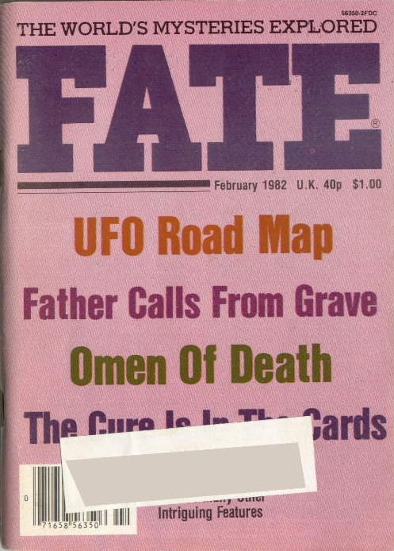

Couverture du n° de Fate ce mois-ci

A Saint Herblain, Loire Atlantique, plusieurs
astronomes amateurs observent avec leurs jumelles une quinzaine d'objets qui se déplacent dans la direction
sud-sud-est sans faire de bruit. De forme légèrement allongée et colorés, ils sont très lumineux. Aucun changement
de forme ou de couleur n'est remarqué durant l'observation GEPAN: PAN classé C.
A Beaugency, Loiret, plusieurs témoins voient un phénomène
ovoïde rouge-orangé. Durant les 47 mn d'observation, le phénomène se déplace en faisant des mouvements de va et
vient de haut en bas. Un des témoins affirme avoir déjà observé ce phénomène dans le courant des mois de janvier et
février au même horaire. La description des témoins, la répétition de l'observation sur plusieurs jours à la même
heure fait penser à une observation astronomique sans qu'il soit possible de conforter cette hypothèse par manque
d'éléments GEPAN: PAN classé C.
A Amiens, Somme, des personnes aperçoivent dans le ciel 1
phénomène lumineux particulier qui se rapproche. 1 des témoins voit des lumières blanches clignotantes émanant de
chaque arête d'une masse sombre de forme hexagonale. Aucun bruit n'est entendu lors du déplacement de l'objet GEPAN: PAN classé C.
A Hyères, Var, 2 personnes voient 1 point très lumineux immobile
d'une grosseur beaucoup plus importante que l'Etoile du Berger. A proximité de ce point, un cylindre est également
immobile. Il semblait émettre une lumière froide non brillante. Aucun bruit n'est entendu durant les 4 mn environ de
l'observation. Lors du déplacement des témoins, les objets disparaissent dans le paysage GEPAN: PAN classé C.
A Guenange, Moselle, 2 personnes observent dans le ciel point
rouge brillant se déplaçant vers le sud La même observation avait été faite en janvier 1981 et 1982 par un autre témoin. La description fait penser à une observation astronomique, hypothèse qui ne peut être vérifiée faute d'élémentsGEPAN: PAN classé C.
Dans l'Yonne, Bourgogne, plusieurs témoins voient dans le ciel et durant quelques s 1 forme
circulaire orangée se déplaçant sud-ouest/nord-est suivie dans son sillage par une trainée lumineuse Les descriptions et dessins faits par les personnes indiquent qu'ils ont probablement été témoins d'une rentrée atmosphériqueGEPAN: PAN classé B.
A Montereau, Seine-et-Marne, une personne observe depuis chez elle, à 100 m de distance
environ, des flammes orangées s'échappant d'une grosse boule. 20 mn plus tard, 3 boules apparaîssent à 1 m du sol,
émettant des lumières de couleurs différentes. Aucun bruit n'est perçu GEPAN: PAN classé D.
A Groom Lake, 1er vol de Tacit Blue
(démonstrateur de technologie furtive) Communiqué de Presse de l'Air Force du 1er avril 1996.